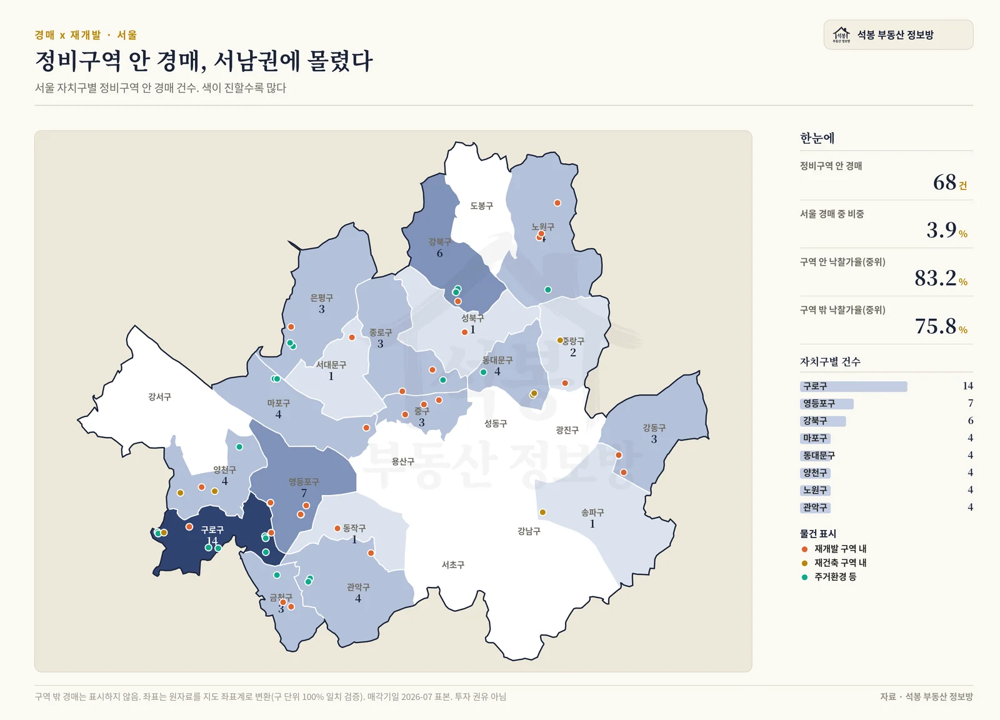
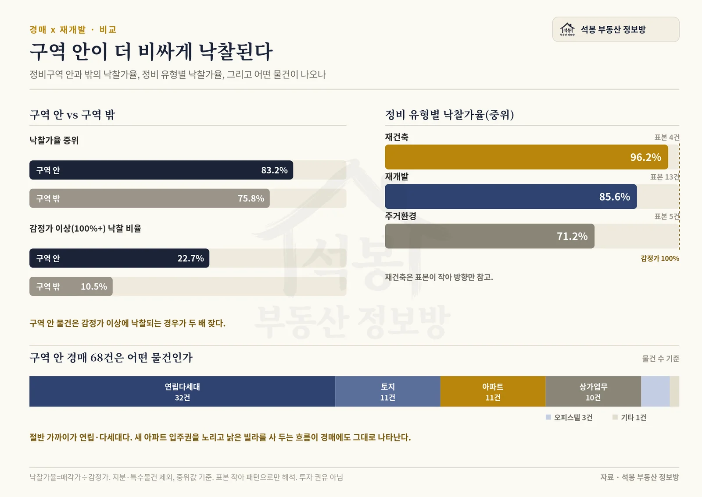
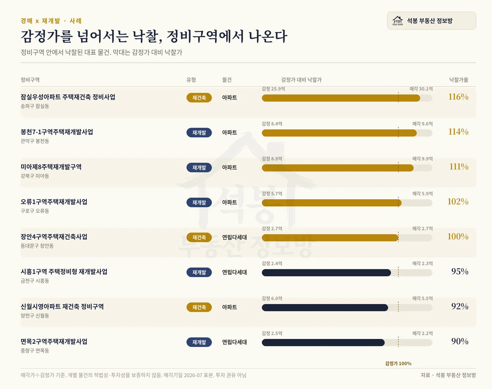

경매는 원래 싸게 사는 시장입니다. 서울 낙찰 물건의 낙찰가율 중위값은 감정가의 76% 언저리, 대체로 감정가 아래에서 손바뀜합니다. 그런데 정비구역 경계 안으로 들어가면 이야기가 달라집니다. 재개발과 재건축 구역 안에서 낙찰된 아파트는 오히려 감정가를 넘겨서 팔리는 경우가 흔했습니다. 우리가 직접 모은 서울 경매 데이터에 서울 정비구역 지도를 겹쳐, 구역 안에 나온 물건이 실제로 어떻게 팔렸는지 하나씩 따져봤습니다.
이 글의 핵심 사례 세 곳
- 잠실우성아파트 재건축(송파) · 감정 25.9억 물건이 30.1억에 낙찰, 낙찰가율 116%
- 봉천7-1구역 재개발(관악 봉천동) · 감정 8.4억 아파트가 9.6억에 낙찰, 114%
- 미아제8 재개발(강북구) · 감정 8.9억 아파트가 9.9억에 낙찰, 111%
왜 정비구역 안 경매만 따로 보나
보통 경매를 뒤지는 이유는 시세보다 싸게 잡으려는 겁니다. 그런데 재개발이나 재건축이 진행되는 땅은 성격이 다릅니다. 지금 낡은 빌라나 오래된 아파트라도, 사업이 끝나면 새 아파트 입주권으로 바뀔 수 있는 자리입니다. 그 기대가 값에 미리 붙습니다. 그래서 같은 경매라도 정비구역 안에 들어온 물건은 "낡아서 싼 집"이 아니라 "새집이 될 자리"로 읽히고, 입찰 경쟁이 붙습니다.
이 기대가 실제 낙찰가에 얼마나 반영되는지 확인하려고, 서울 경매 매각 물건의 위치 좌표를 서울 정비구역 지도 위에 하나씩 찍어봤습니다. 좌표가 확인된 서울 경매 1,723건 가운데, 정비구역 경계 안에 정확히 들어온 물건은 68건이었습니다. 전체의 3.9% 정도로 많지는 않지만, 이 68건이 보여주는 패턴은 분명했습니다. 자치구로 보면 구로구가 14건으로 가장 많았고 영등포구와 강북구가 뒤를 이었습니다. 재개발과 재건축이 몰린 노후 주거지일수록 경매 물건도 그 안에서 자주 나온다는 이야기입니다. 위 지도에서 관심 있는 지역을 눌러 어느 구역에 어떤 물건이 있는지 직접 살펴보실 수 있습니다.

구역 안이 확실히 더 비싸게 팔린다
먼저 낙찰가율부터 봤습니다. 낙찰가율은 낙찰가를 감정가로 나눈 값으로, 100%면 감정가에 딱 맞게, 그 위면 감정가를 넘겨 낙찰됐다는 뜻입니다. 정비구역 밖 서울 경매의 낙찰가율 중위값은 75.8%였습니다. 감정가보다 4분의 1쯤 싸게 팔린다는 이야기죠. 그런데 구역 안은 83.2%였습니다. 7%포인트 넘게 높습니다.
더 눈에 띄는 건 감정가를 아예 넘겨 낙찰된 비율입니다. 구역 밖에서는 낙찰 물건의 10.5%만 감정가 이상에 팔렸는데, 구역 안에서는 22.7%, 두 배가 넘었습니다. 싸게 사려고 가는 경매판에서, 정비구역 안 물건만큼은 감정가를 넘겨서라도 가져가겠다는 사람이 그만큼 많았다는 뜻입니다.

| 구분 | 낙찰가율(중위) | 감정가 이상 낙찰 비율 |
|---|---|---|
| 정비구역 안 | 83.2% | 22.7% |
| 정비구역 밖 | 75.8% | 10.5% |
사업이 무르익을수록 값이 붙는다
같은 정비구역이라도 사업 성격에 따라 온도차가 있었습니다. 구역 안 낙찰 물건을 유형별로 나눠보면, 재건축이 낙찰가율 중위 96.2%로 가장 높았고, 재개발이 85.6%, 노후 주거지를 손보는 주거환경사업이 71.2%였습니다. 사업이 새 아파트에 가까울수록, 그리고 입주권 기대가 또렷할수록 낙찰가가 감정가에 바짝 붙는 흐름입니다. 다만 재건축은 이번 표본이 4건으로 적어 방향만 참고하는 게 맞습니다.
대표 낙찰 사례
구역 안에서 실제로 팔린 물건들을 낙찰가율 순으로 늘어놓으면 이렇게 됩니다.

맨 위 잠실우성아파트 재건축 물건은 한 번도 유찰되지 않고 첫 회차에 감정가를 16% 넘겨 낙찰됐습니다. 재건축이 눈앞인 자리라 신건부터 경쟁이 붙은 겁니다. 봉천7-1구역과 미아제8구역의 아파트도 나란히 감정가를 10% 넘게 웃돌았고, 구로구 오류1구역 재개발 아파트는 딱 감정가 언저리(102%)에서 손바뀜했습니다. 반대로 사업 초기이거나 주거환경사업 쪽 빌라는 90% 안팎으로, 정비 기대가 아직 값에 덜 붙은 모습이었습니다.
정비구역 밖 경매는 감정가보다 싸게(중위 75.8%), 정비구역 안 경매는 감정가에 바짝 붙거나 넘겨서(중위 83.2%) 낙찰됩니다. 재건축에 가까울수록 그 경향이 강합니다.
싸 보인다고 덤비면 안 되는 이유
여기까지 보면 "정비구역 경매는 무조건 좋은 거 아니냐" 싶지만, 오히려 반대로 읽어야 합니다. 구역 안 물건은 감정가를 넘겨서라도 사겠다는 사람이 붙기 때문에, 초보자가 "경매라 싸다"는 감으로 들어갔다가 시세만큼, 때로는 시세 이상으로 사버리는 일이 생깁니다. 챙겨야 할 것이 셋 있습니다.
1. 감정가가 아니라 지금 시세와 입주권 값으로 판단하라
감정가는 감정 시점의 값이라 정비사업이 진행될수록 실제 거래가와 벌어집니다. 낙찰가율 90%가 싼지 비싼지는 감정가가 아니라 그 구역의 조합원 입주권 시세와 대지지분 가치로 따져야 압니다. 우리 실거래지도에서 그 동네 시세와 정비구역 단계를 먼저 확인하고 들어가시길 권합니다.
2. 경매로 받아도 입주권이 안 나올 수 있다
정비구역 경매에서 가장 큰 함정이 조합원 자격입니다. 투기과열지구에서는 사업 단계(재건축은 조합설립 이후, 재개발은 관리처분 이후)에 따라 새로 취득한 사람이 조합원 지위를 물려받지 못하고 현금청산 대상이 될 수 있습니다. 경매 취득에 예외가 인정되는 경우도 있지만 물건과 단계, 시기에 따라 갈리므로 단정은 금물입니다. 입찰 전에 그 구역의 사업 단계와 조합원 승계 가능 여부를 반드시 확인하셔야 합니다. 이걸 놓치면 "새 아파트 입주권"이 아니라 현금 정산으로 끝날 수 있습니다.
3. 권리분석과 명도는 여기서도 그대로 든다
정비구역이라고 권리관계가 깨끗한 건 아닙니다. 말소되지 않고 낙찰자가 떠안는 권리, 점유자를 내보내는 명도 비용은 일반 경매와 똑같이 챙겨야 합니다. 여기에 이주 시기, 추가분담금까지 얹히면 "싸게 샀다"는 계산이 흔들립니다.
이 글은 경매 데이터를 파고드는 시리즈의 두 번째 편입니다. 경매와 공매 중 어디가 더 싼지, 몇 번 유찰돼야 반값이 되는지는 지난 편 "경매냐 공매냐, 그리고 몇 번 떨어져야 반값이 되나"에서 다뤘고, 서울 정비구역 판이 지금 어떻게 돌아가는지는 재개발·재건축 현황 리포트에서 지도로 정리해 두었습니다.
공개 경매 정보와 서울 정비구역 경계 자료 기반, 석봉 부동산 정보방 집계 · 기준일 2026년 7월 29일 · 편집·제작: 석봉 부동산 정보방 · 본 자료는 정보 제공 목적이며 투자 권유가 아닙니다.